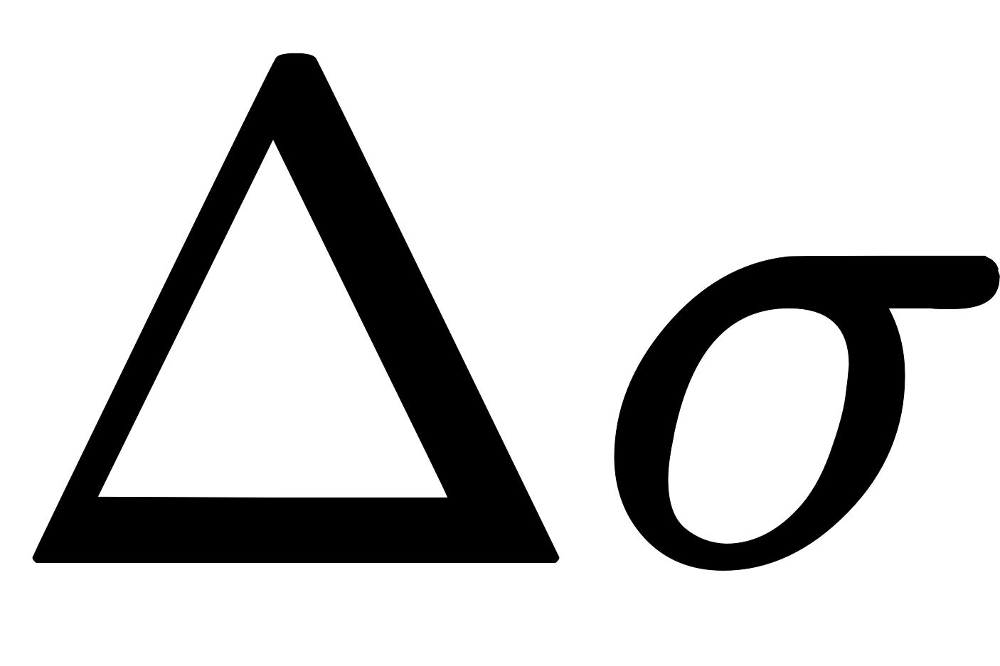

On computer systems with low floating-point precision, the spherical law of cosines formula can have large rounding errors if the distance is small (if the two points are a kilometer apart on the surface of the Earth, the cosine of the central angle comes out 0.99999999). For modern 64-bit floating-point numbers, the spherical law of cosines formula, given above, does not have serious rounding errors for distances larger than a few meters on the surface of the Earth.[3] The haversine formula is numerically better-conditioned for small distances:[4]
Historically, the use of this formula was simplified by the availability of tables for the haversine function: hav(θ) = sin2(θ/2).
Although this formula is accurate for most distances on a sphere, it too suffers from rounding errors for the special (and somewhat unusual) case of antipodal points (on opposite ends of the sphere). A more complicated formula that is accurate for all distances is the following special case of the Vincenty formula for an ellipsoid with equal major and minor axes:[5]

When programming a computer, one should use the atan2() function rather than the ordinary arctangent function (atan()), so that Δ σ {\displaystyle \Delta \sigma }  is placed in the correct quadrant.